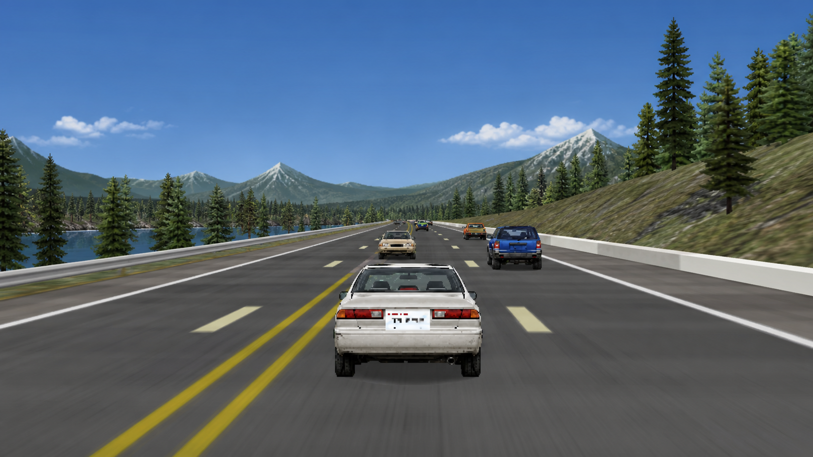
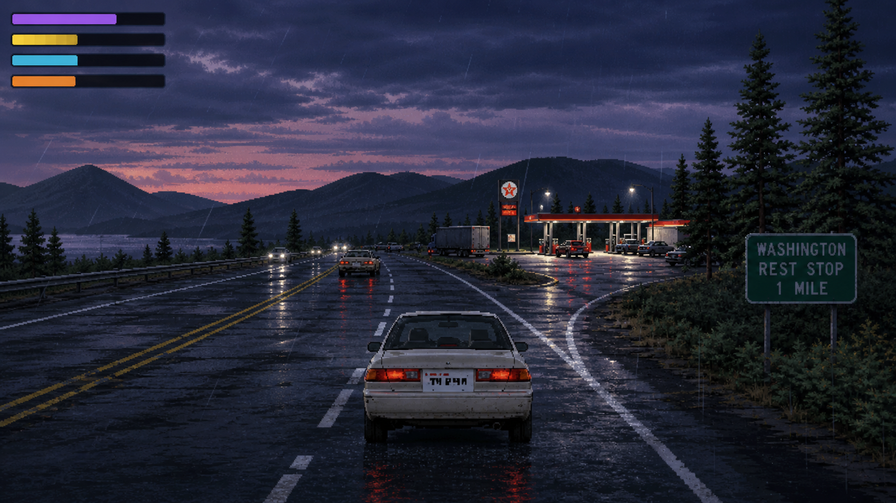
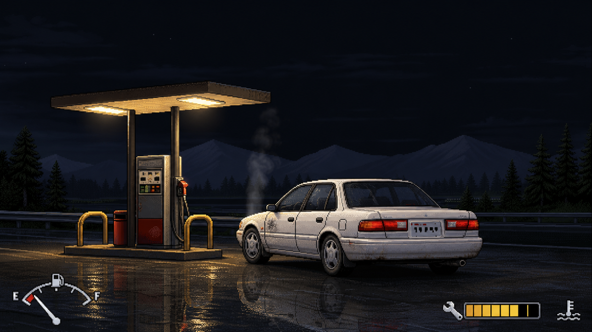
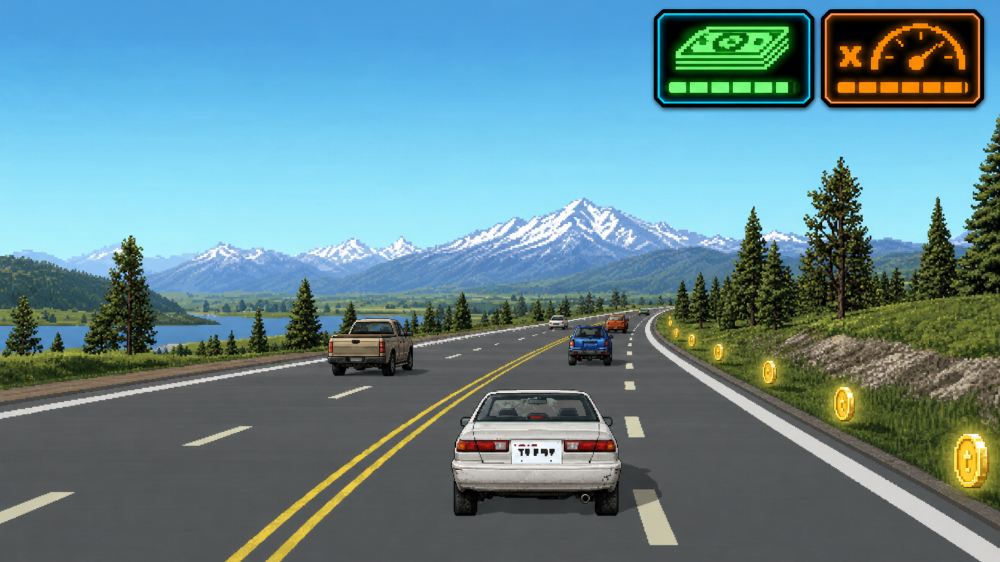
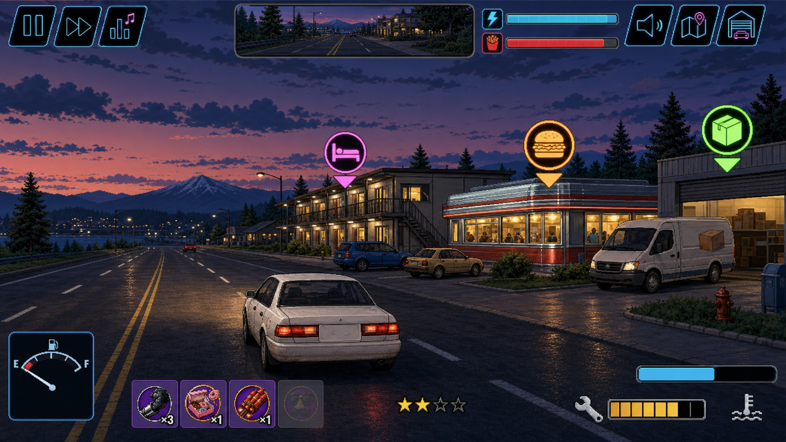
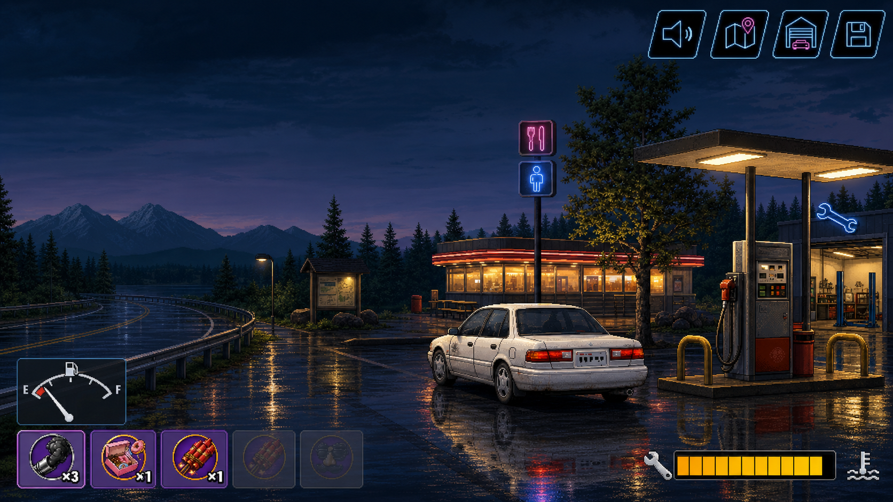
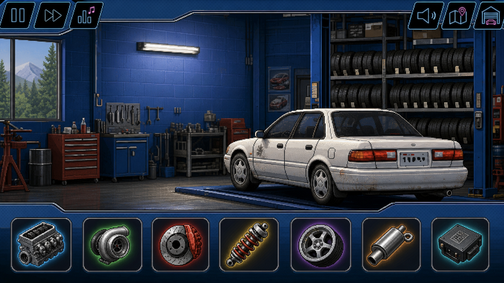
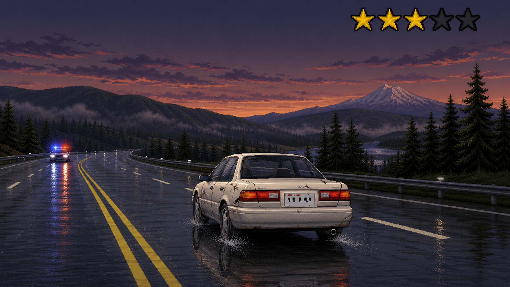
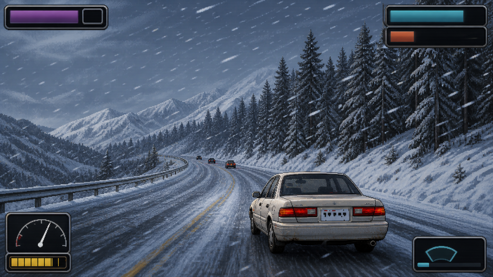
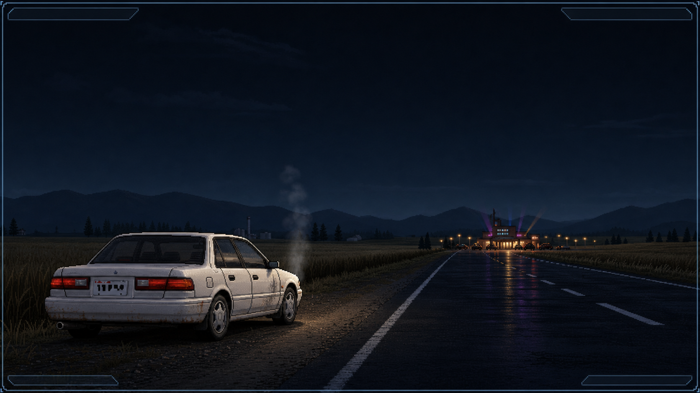

The tutorial teaches you to drive. This teaches you to arrive. Every system in the game, one section at a time.

Your car has two natural speeds: a cruise it settles into with no pedal input, and a pedal-down top speed. Which pair you get depends on your genre — the Reggae van cruises at 80 mph while the EDM supercar tops out at 165. Caffeine pushes both higher; ACCEL boost pickups slam you past your top speed for a few seconds.

Top-left: the four survival bars — Alertness, Food, Drinks, Bladder.
You're a human being, unfortunately. Four needs drain as you drive:
Overfilling has consequences too — top a bar past 75% and stuffing more in does half as much. Nobody needs a fourth hotdog.

HUD: fuel gauge (bottom-left), repair level and engine temp (bottom-right).
Gas costs about $0.50 a mile, and the tank drains faster than the odometer: climbs guzzle hard, boosting adds a surcharge, and an overheating engine drinks even at idle. The gas light comes on with ~30 miles left — east of Vantage, that's not a suggestion.
Filling up has its own gamble: roughly 1 fill-up in 5 gets you robbed at the pump for a slice of your cash. Welcome to the road.
The engine also runs a temperature. Desert heat, long grades, and full throttle push it up; past the red line it enters limp mode — top speed cut to 60% until it cools — and redlining flat-out melts HP off the car.

Top-right: driving cash and the bonus multiplier. Those coins on the shoulder are yours if you dare.
Driving itself pays — a per-mile trickle that scales with speed. Hold a clean, fast line and a driving bonus multiplier ramps up on top of it; scrape a fender or dawdle below cruise speed and it resets (each genre bends these rules its own way — Classic Rock gets +20% cash above 120 mph, Reggae never takes the slow-driving penalty).
Cash buys gas, repairs, food, and upgrades. Your score is the run's real report card — and it's what the leaderboard remembers.

Markers flag work: lodging, food, and a cargo pickup. Bottom-center: your rep stars.
Rest stops post work: passenger fares, cargo and delivery runs, timed jobs, and shadier one-offs. Missions pay cash up front and build reputation — and rep tiers multiply mission payouts as you climb, up to ×5 at the top. The route out of Seattle pays pocket change; the same work in the scablands pays like it knows where you are.

Diner, bathrooms, pumps, and the repair bay — plus your weapon inventory (bottom-left).
Nineteen towns between Seattle and Pullman have an exit with your name on it. Pulling off stops the clock on the road but not on your night — inside you can:
The gaps matter more than the stops: after Othello it's 44 dark miles of WA-26 with almost nothing. Roll out of a stop unprepared and the road will grade your packing list.

The part slots: engine, turbo, brakes, suspension, tires, exhaust, and the ECU.
Cash sunk into the car stays sunk into the run — bigger fuel systems for range, better cooling, brakes, tires for the Pass, and more. Pop-Punk's Tour Hatchback even gets its wrenching at a 25% discount.
Dealerships along the route will also sell you a different genre's ride if you've got the cash — switch scenes mid-run when your War Van's fuel bill stops being funny.

Top-right: the wanted stars. Behind you: the reason they exist.
The Washington State Patrol is the other main character. Speeding and reckless driving in view of a cop earns warnings, then tickets, then wanted stars — and once you're wanted, cruisers stop watching and start chasing. Stars decay if you keep your nose clean; how fast depends on who you are (phonk's sedan runs hotter, 25% slower decay).

Snow eats grip and visibility — wipers (bottom-right) only fix one of those.
The route crosses a mountain range and a desert in one night, and the game simulates the whole argument:

Sometimes the venue lights stay on the horizon.
Four ways, mostly:
Then it's Friday again. Different genre, different machine, different run — same 293 miles. That's the roulette.